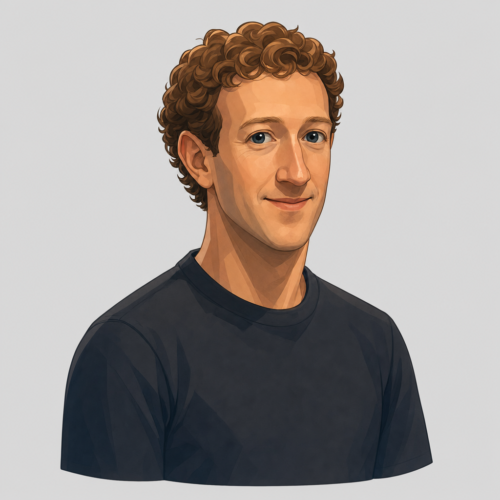

San Theft Auto / Character workshop
One character. Get the face right.
The cartoon is the target. This first 3D study is here to inspect its likeness, silhouette, and expression before taking it further.
The cartoon direction
From approved concept
Look for the same relaxed face, clear blue eyes, grouped curls, and natural proportions. Every angle should feel like the same character.

The first 3D study
Meshy · Awaiting reviewOpening the 3D study…
Drag to rotate · Scroll or pinch to zoom · Arrow keys to turnDownload model
Studio shows the exported materials under soft light. Compare paint and clay to see which details come from color and which are in the shape.